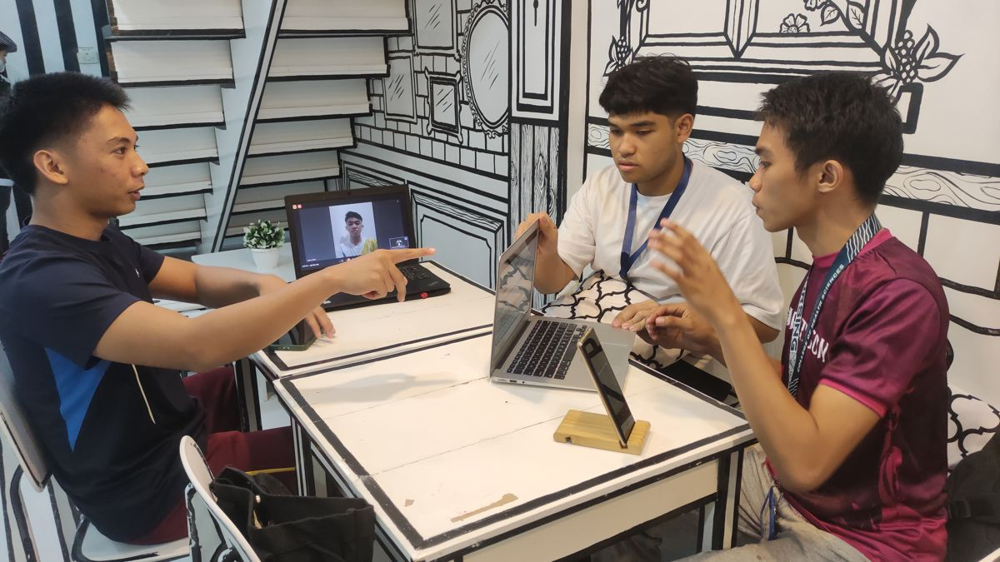
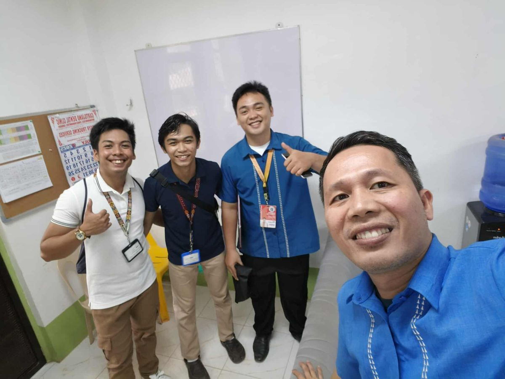

STEM and college entrance test review mentorship
Structured review sessions and academic guidance for Senior High School students preparing for college admission exams (MSU-SASE) and scholarship tests (DOST-SEI).
How I can help students, organizations, and young founders.
Structured review sessions and academic guidance for Senior High School students preparing for college admission exams (MSU-SASE) and scholarship tests (DOST-SEI).

Interactive, high-touch leadership workshops and career discovery sessions for student organizations and regional youth groups.

Help for student founders to refine their value propositions, streamline operations, and structure concise pitches for evaluation panels.

End-to-end planning, logistics, and direct outreach for youth-driven community programs and regional educational hubs.